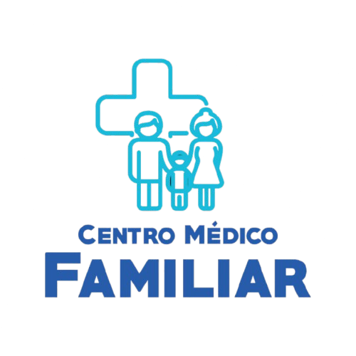
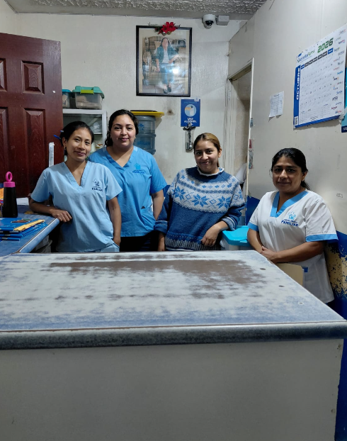

Nuestra misión
Nuestro compromiso como institución médica guatemalteca es promover la recuperación de la salud, Proporcionando servicios integrales, de atención personalizada a los pacientes.

Cuidamos de ti y de tu familia
Nuestro compromiso es brindar una atención humana, responsable y cercana, poniendo el bienestar de cada paciente en el centro de todo lo que hacemos.
Nuestros principios orientan cada una de nuestras acciones y el compromiso que mantenemos con nuestros pacientes.
Nuestro compromiso como institución médica guatemalteca es promover la recuperación de la salud, Proporcionando servicios integrales, de atención personalizada a los pacientes.
Ser una institución médica privada que establezca el más alto estándar de calidad en la atención médica de servicios hospitalarios de San Juan Sacatepéquez y sus alrededores.
Los principios que inspiran nuestra forma de trabajar y relacionarnos con cada paciente.
Todo nuestro personal busca alcanzar las mejores prácticas y la innovación en proveer cuidados de la más alta calidad para que nuestros pacientes y sus familias se sientan satisfechos con nuestro servicio.
Como institución, estamos comprometidos a actuar con rectitud, honestidad, transparencia, respeto y lealtad para todas las personas.
El personal de la Institución Médica actúa de manera consciente y sensible con respecto a la atención que requieren nuestros pacientes, la cual debe realizarse en el contexto de la ética y los valores, de este modo se pretende atender al paciente y su familia supliendo sus necesidades a nivel físico, emocional, intelectual y social.
Como Institución Médica empleamos con todo nuestro personal un ambiente de confianza, basado en el respeto mutuo, el cual es reflejado y percibido por nuestros clientes a través de la atención.
Conoce las áreas de atención y encuentra la información que necesitas.
Consulta información sobre los servicios de atención médica disponibles en nuestro centro.
Explorar servicios →Consulta información sobre los servicios de farmacia y la disponibilidad de atención.
Obtener información →Infórmate sobre los exámenes disponibles, sus requisitos y los procedimientos de atención.
Conocer más →¿Necesitas más información sobre nuestros servicios?
Ver todos los servicios →
Conoce nuestra historia, los principios que nos representan y al equipo humano que forma parte de nuestro centro médico.
Conoce a los profesionales y consulta la información sobre sus especialidades.
Conocer a los médicos →Mantén una alimentación equilibrada, realiza actividad física con regularidad, procura descansar lo suficiente y dedica tiempo a tu bienestar emocional.